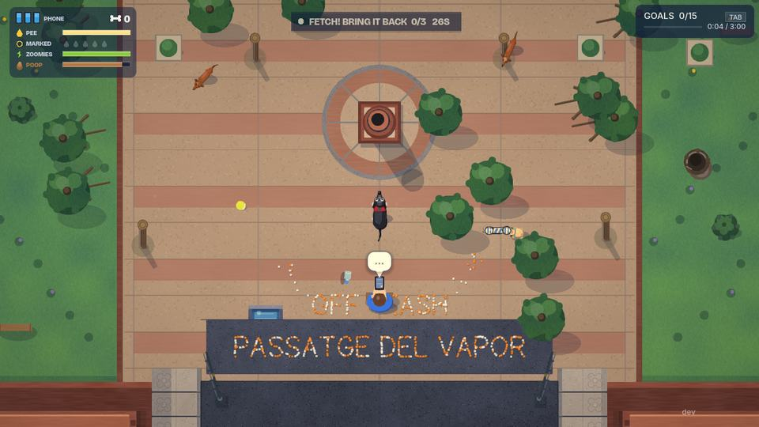

La Superilla
The green superblock reclaimed for pedestrians
Reclaimed Eixample crossroads closed to through cars and handed over to planters, painted geometric circles, wooden benches, family cargo bikes and concrete ping-pong tables. Everybody treats the asphalt like a shared living room until you zoom through at full leash.
- Off-leash stop
- PASSATGE DEL VAPOR (Fenced dog yard)
- Beat the clock
- Under 3:00
Screenshots



Goals (15)
- Mark 5 spots
- Have 4 good long sniffs
- Get the phone home without a scratch
- Get yourself home without a bump
- Get your business bagged
- Bring the ball back 3 times
- Scarf down 2 dropped snacks
- Dodge the family cargo trike safely
- Slide under a concrete ping-pong table
- Sprint through 3 painted circles
- Land an x3 trick combo
- Snatch the horchata off the orxateria table
- Spell LEASH
- Find the hidden pernil
- Beat the clock (under 3:00)